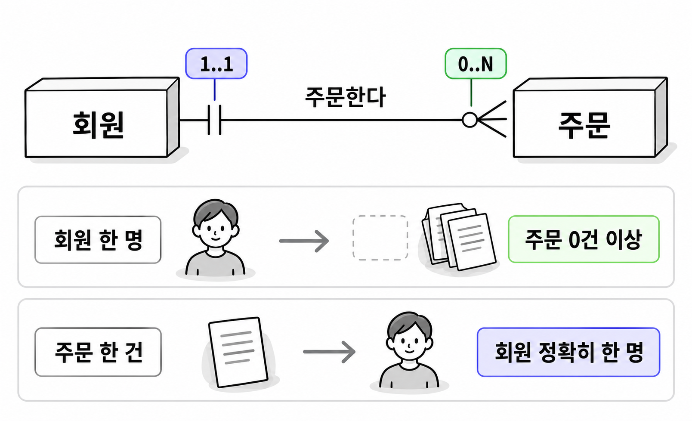
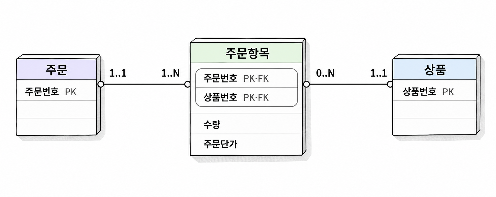
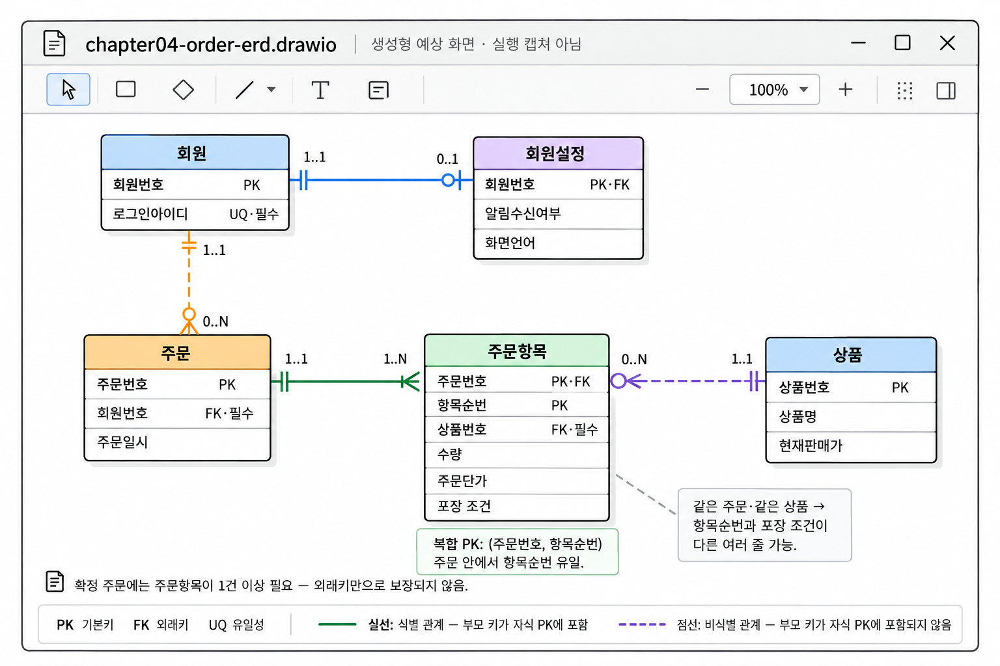

4장. 식별자와 관계 설계란?
1. 행을 구별하는 키
1.1 슈퍼키·후보키·기본키·대체키
식별자(identifier)는 엔터티의 각 대상을 구별하는 속성 또는 속성의 조합입니다. 테이블에서는 키로 행을 구별합니다. 회원 이름이 같더라도 회원번호가 다르면 서로 다른 회원으로 관리할 수 있습니다.
키는 지금 저장된 데이터만 보고 정하지 않습니다. 앞으로 허용할 데이터에서도 유일해야 합니다. 회원 이름이 현재 모두 다르더라도 동명이인을 허용한다면 이름은 키가 될 수 없습니다.
다음 회원 정보에 두 가지 업무 규칙을 적용한다고 가정합니다. 회원번호는 모든 회원에게 부여하며 중복되지 않습니다. 로그인아이디도 반드시 입력하며 회원 간에 중복되지 않습니다.
| 회원번호 | 로그인아이디 | 회원명 |
|---|---|---|
| 101 | river21 | 김서윤 |
| 102 | cloud07 | 박지호 |
| 103 | forest32 | 김서윤 |
이 규칙에서는 회원번호 하나로 행을 구별할 수 있습니다. 로그인아이디 하나로도 가능합니다. 회원명은 같은 값이 있으므로 행을 유일하게 구별하지 못합니다.
| 키의 종류 | 뜻 | 이 사례의 예 |
|---|---|---|
| 슈퍼키(superkey) | 행을 유일하게 구별하는 속성의 집합 | {회원번호}, {로그인아이디}, {회원번호, 회원명} |
| 후보키(candidate key) | 속성을 하나라도 빼면 유일성을 잃는 슈퍼키 | {회원번호}, {로그인아이디} |
| 기본키 | 후보키 중 대표로 선택한 키 | 회원번호를 선택 |
| 대체키(alternate key) | 기본키로 선택하지 않은 나머지 후보키 | 로그인아이디 |
{회원번호, 회원명}은 슈퍼키이지만 후보키는 아닙니다. 회원명을 빼도 회원번호만으로 행을 구별하기 때문입니다. 후보키에서 말하는 최소성은 속성 개수가 가장 적다는 뜻이 아닙니다. 해당 키에서 불필요한 속성을 더 뺄 수 없다는 뜻입니다.
기본키와 대체키는 모두 후보키입니다. 기본키가 대체키를 포함하거나 대체키보다 더 유일한 것은 아닙니다. 여러 후보 가운데 어느 키를 대표로 사용할지 선택한 결과입니다.
테이블의 기본키는 하나만 정합니다. 다만 하나의 기본키가 여러 컬럼으로 구성될 수 있습니다. 기본키의 모든 컬럼에는 값이 있어야 하며, 키 값의 조합은 중복될 수 없습니다.
1.2 자연키·대리키·복합키의 선택
자연키(natural key)는 업무에서 사용하는 속성으로 구성한 키입니다. 앞 사례의 로그인아이디처럼 서비스에서 원래 관리하는 값으로 행을 구별합니다.
대리키(surrogate key)는 행을 식별하려고 별도로 부여한 키입니다. 시스템이 생성한 회원번호가 여기에 해당합니다. 회원번호 자체에 가입 지역이나 회원 등급 같은 업무 의미를 넣지 않고 식별에 사용합니다.
복합키(composite key)는 두 개 이상의 속성으로 구성한 키입니다. 주문 안에서 주문항목에 순번을 부여한다면 {주문번호, 항목순번}으로 주문항목을 구별할 수 있습니다.
| 주문번호 | 항목순번 | 상품번호 | 수량 |
|---|---|---|---|
| 7001 | 1 | 301 | 2 |
| 7001 | 2 | 305 | 1 |
| 7002 | 1 | 301 | 1 |
항목순번 1은 여러 주문에서 반복됩니다. 주문번호도 여러 주문항목에서 반복됩니다. 두 값을 함께 사용해야 특정 주문항목 하나가 정해집니다.
자연키와 대리키는 키를 어디에서 얻는지에 관한 구분입니다. 복합키는 키를 구성하는 속성의 개수에 관한 구분입니다. 따라서 자연키도 복합키일 수 있습니다.
| 판단 기준 | 자연키를 사용할 때 | 대리키를 사용할 때 |
|---|---|---|
| 업무 의미 | 키 값으로 업무 대상을 알아보기 좋습니다 | 별도의 업무 속성을 함께 확인해야 합니다 |
| 값의 변경 | 업무 정책에 따라 바뀔 가능성을 확인합니다 | 업무 속성이 바뀌어도 식별값을 유지하기 좋습니다 |
| 다른 테이블의 참조 | 길거나 복잡하면 참조 컬럼도 늘어납니다 | 짧은 단일 값으로 참조하기 좋습니다 |
| 업무상 중복 방지 | 자연키가 해당 중복을 직접 막습니다 | 업무상 유일성 규칙을 별도로 둬야 합니다 |
로그인아이디 변경을 허용한다면 회원번호를 기본키로 사용하는 편이 편리합니다. 주문 테이블이 회원번호를 참조하면 로그인아이디를 바꿔도 주문의 참조값을 바꿀 필요가 없습니다.
복합키는 여러 값이 함께 있어야 대상을 구별한다는 규칙을 드러냅니다. 다만 다른 테이블이 복합키를 참조하면 키를 구성하는 컬럼을 함께 가져가야 합니다. {주문번호, 항목순번}을 참조할 때 항목순번만 저장해서는 어느 주문의 항목인지 알 수 없습니다.
어느 방식이 항상 우수한 것은 아닙니다. 값의 안정성, 키의 길이, 참조하는 테이블의 수를 함께 보고 선택합니다.
1.3 식별자 생성과 업무상 유일성의 구분
새 번호를 발급하는 일과 업무상 중복을 막는 일은 다릅니다.
회원번호를 자동으로 발급하더라도 같은 로그인아이디로 회원을 두 번 등록할 수 있다면 업무 규칙을 지키지 못한 것입니다.
| 회원번호 | 로그인아이디 | 회원명 |
|---|---|---|
| 101 | river21 | 김서윤 |
| 104 | river21 | 김서윤 |
회원번호는 서로 다르므로 기본키 중복은 없습니다. 그러나 로그인아이디 중복을 허용하지 않는다는 규칙에는 어긋납니다.
Oracle에서는 시퀀스나 IDENTITY 컬럼으로 번호를 생성할 수 있습니다. 번호 생성 방식을 정한 뒤에도 기본키와 업무상 유일성 규칙을 따로 정의해야 합니다. 로그인아이디가 필수 후보키라면 중복 금지와 필수 입력을 모두 표현합니다. Oracle의 UNIQUE 제약만으로는 필수 입력까지 보장하지 않습니다.
설계 문서에서도 각 규칙을 구분해 기록합니다.
| 구분 | 회원 엔터티의 규칙 |
|---|---|
| 행 식별 | 회원번호로 회원 한 명을 구별합니다 |
| 번호 생성 | 신규 회원을 등록할 때 시스템이 회원번호를 발급합니다 |
| 업무상 유일성 | 로그인아이디는 회원 간에 중복될 수 없습니다 |
| 필수성 | 모든 회원은 로그인아이디를 가져야 합니다 |
대리키를 추가했다고 기존 후보키의 의미가 사라지지는 않습니다. 기본키로 선택하지 않은 후보키도 계속 유일하게 유지해야 합니다.
2. 관계의 수량과 참여 조건
2.1 양방향으로 판단하는 1:1·1:N·N:M
관계(relationship)는 엔터티 사이의 업무상 연결입니다. 회원은 주문을 하고, 주문은 회원에게 속합니다. 관계를 설계할 때는 한 대상에 상대편 대상이 최대 몇 개까지 연결되는지 확인합니다.
한쪽 방향만 확인하면 관계를 잘못 판단할 수 있습니다. 반드시 양쪽에서 한 대상을 기준으로 묻습니다.
| 관계 | 한쪽에서 확인할 질문 | 반대쪽에서 확인할 질문 |
|---|---|---|
| 회원과 주문 | 회원 한 명은 주문을 최대 몇 건 할 수 있습니까? | 주문 한 건은 회원 최대 몇 명에게 속합니까? |
| 주문과 상품 | 주문 한 건에 상품을 최대 몇 종류 담을 수 있습니까? | 상품 하나는 주문 최대 몇 건에 포함될 수 있습니까? |
| 회원과 회원설정 | 회원 한 명은 설정을 최대 몇 건 가집니까? | 설정 한 건은 회원 최대 몇 명에게 속합니까? |
여기서는 다음 정책을 적용합니다. 회원은 여러 번 주문할 수 있고, 주문 한 건은 회원 한 명에게 속합니다. 주문에는 여러 상품을 담을 수 있으며, 같은 상품이 여러 주문에 포함될 수 있습니다. 회원설정은 회원당 최대 한 건이고, 다른 회원과 공유하지 않습니다.
| 관계 유형 | 양방향의 최대 수량 | 이 사례의 관계 |
|---|---|---|
| 일대일 관계(one-to-one relationship), 1:1 | 양쪽 모두 최대 하나 | 회원과 회원설정 |
| 일대다 관계(one-to-many relationship), 1:N | 한쪽에서 여러 개, 반대쪽에서 하나 | 회원과 주문 |
| 다대다 관계(many-to-many relationship), N:M | 양쪽에서 여러 개 | 주문과 상품 |
회원:주문을 1:N으로 표현했다면 주문:회원은 N:1입니다. 같은 관계를 반대 방향에서 읽은 것입니다. N과 M은 특정 숫자가 아니라 여러 개를 허용한다는 뜻입니다.
관계는 현재 행 수가 아니라 업무 규칙으로 정합니다. 회원마다 주문이 한 건씩만 저장되어 있어도 여러 번 주문할 수 있다면 회원과 주문은 1:N입니다. 앞으로 회원 한 명에게 여러 설정을 허용한다면 회원설정이라는 이름을 그대로 쓰더라도 관계는 달라집니다.
2.2 최소·최대 수량과 선택·필수 참여
최대 수량으로 관계 유형을 정했다면 최소 수량도 확인합니다. 회원이 주문을 여러 건 할 수 있다는 규칙과 반드시 한 건 이상 해야 한다는 규칙은 별개입니다.
관계의 수량은 최소값과 최대값을 함께 적으면 명확해집니다.
| 수량 | 의미 |
|---|---|
0..1 | 없어도 되며, 있으면 최대 한 개입니다 |
1..1 | 반드시 한 개가 있어야 합니다 |
0..N | 없어도 되며, 여러 개가 있을 수 있습니다 |
1..N | 반드시 한 개 이상 있어야 합니다 |
최소 수량이 0이면 선택 참여(optional participation)입니다. 최소 수량이 1 이상이면 필수 참여(mandatory participation)입니다.
가입만 하고 아직 주문하지 않은 회원을 허용한다고 가정합니다. 비회원 주문은 허용하지 않습니다. 이때 회원 한 명에게 연결되는 주문은 0..N이고, 주문 한 건에 연결되는 회원은 1..1입니다.

그림 4-1에서 주문 쪽의 0..N은 회원 하나에 연결할 수 있는 주문의 수를 나타냅니다. 회원 쪽의 1..1은 주문 하나에 연결되는 회원의 수입니다. 관계선 끝의 표시는 반대편 한 대상을 기준으로 읽습니다.
회원에게 주문이 없어도 된다는 규칙은 주문의 회원번호를 비워도 된다는 뜻이 아닙니다. 이 사례에서 주문은 반드시 회원에게 속해야 합니다.
draw.io에서 까마귀발 표기법을 사용할 때는 원으로 최소 0을, 막대로 1을 나타냅니다. 까마귀발은 최대 여러 개를 나타냅니다. 관계선의 양쪽 끝에 최소·최대 수량을 모두 표시합니다.
2.3 식별 관계·비식별 관계와 존재 의존성
식별 관계(identifying relationship)는 부모의 기본키가 자식의 기본키에 포함되는 관계입니다. 자식을 구별할 때 부모의 식별값도 사용합니다.
주문항목의 기본키가 {주문번호, 항목순번}이라면 주문번호는 두 역할을 맡습니다. 주문을 참조하는 외래키이면서 주문항목 기본키의 일부입니다. 주문번호 없이는 주문항목을 완전히 식별할 수 없습니다.
비식별 관계(non-identifying relationship)는 부모를 참조하는 외래키가 자식의 기본키에 포함되지 않는 관계입니다. 주문항목에 별도의 주문항목번호를 부여하고 이를 기본키로 선택하면 주문과 주문항목은 비식별 관계로 표현할 수 있습니다.
| 구분 | 식별 관계로 설계 | 비식별 관계로 설계 |
|---|---|---|
| 주문항목 기본키 | 주문번호 + 항목순번 | 주문항목번호 |
| 주문 외래키 | 주문번호 | 주문번호 |
| 주문번호의 기본키 포함 여부 | 포함 | 포함하지 않음 |
| 주문 없는 주문항목 허용 여부 | 허용하지 않음 | 허용하지 않도록 별도 필수 조건 지정 |
두 안 모두 주문 없는 주문항목을 허용하지 않을 수 있습니다. 이런 업무 조건을 존재 의존성(existence dependency)이라고 합니다. 자식이 존재하려면 부모가 있어야 한다는 뜻입니다.
식별 관계는 기본키의 구성에 관한 구분입니다. 존재 의존성은 부모 없이 자식이 존재할 수 있는지에 관한 규칙입니다. 따라서 비식별 관계라고 해서 부모 참조가 선택 사항인 것은 아닙니다. 비식별 관계에서도 외래키를 필수로 정할 수 있습니다.
비식별 관계에서 주문 안의 항목순번을 계속 사용한다면 {주문번호, 항목순번}의 중복 금지도 유지합니다. 주문항목번호가 달라도 같은 주문의 같은 순번을 중복 등록해서는 안 되기 때문입니다.
식별 관계를 선택했다고 부모를 삭제할 때 자식이 자동으로 삭제되는 것도 아닙니다. 삭제 정책은 식별 방식과 별도로 정합니다.
ERD 표기법 중에는 식별 관계를 실선으로, 비식별 관계를 점선으로 나타내는 방식이 있습니다. 사용할 도형의 표기 규칙을 확인하고 다이어그램에 범례를 남깁니다. 선 모양만으로 필수 참여 여부를 판단하지 않습니다.
3. 관계를 테이블로 표현하기
3.1 1:N의 외래키 배치
1:N 관계에서는 N쪽 테이블에 외래키를 둡니다. N쪽 한 행이 1쪽의 한 행을 참조하도록 표현합니다.
회원과 주문이라면 주문 테이블에 회원번호를 둡니다. 주문 한 건이 회원 한 명에게 속하므로 회원번호 하나로 연결할 수 있습니다.
회원 테이블은 다음과 같습니다.
| 회원번호(PK) | 회원명 |
|---|---|
| 101 | 김서윤 |
| 102 | 박지호 |
주문 테이블은 다음과 같습니다.
| 주문번호(PK) | 회원번호(FK, 필수) | 주문일 |
|---|---|---|
| 7001 | 101 | 2026-10-01 |
| 7002 | 101 | 2026-10-03 |
| 7003 | 102 | 2026-10-03 |
회원번호 101이 주문 테이블에서 반복되어도 문제가 없습니다. 한 회원이 여러 주문을 할 수 있다는 뜻입니다. 주문의 회원번호에 중복 금지를 적용하면 회원당 주문을 최대 한 건으로 제한합니다. 이는 원래의 1:N 규칙과 맞지 않습니다.
반대로 회원 테이블에 주문번호 목록을 저장하면 회원 한 행에서 여러 주문번호를 관리해야 합니다. 주문이 늘 때마다 목록을 고쳐야 하고, 목록 안의 각 값에 일반적인 외래키 제약을 적용하기도 어렵습니다.
외래키를 가진 테이블을 자식 테이블, 참조되는 테이블을 부모 테이블이라고 부릅니다. 이 사례에서는 주문이 자식이고 회원이 부모입니다. 주문의 회원번호는 회원 테이블에 존재하는 회원번호를 가리켜야 합니다.
부모키가 복합키라면 자식도 그 구성에 맞는 외래키 컬럼을 둡니다. 참조할 키가 {주문번호, 항목순번}이라면 두 값을 함께 저장하고 하나의 복합 외래키로 연결합니다.
외래키 하나로 양방향 조회가 가능합니다. 주문에서 회원을 찾을 수도 있고, 회원번호로 해당 회원의 주문들을 찾을 수도 있습니다. 같은 관계를 회원의 주문번호 목록으로 다시 저장할 필요는 없습니다.
3.2 N:M의 연결 엔터티와 관계 속성
N:M 관계는 양쪽을 잇는 연결 엔터티(associative entity)로 표현합니다. 테이블로 구현할 때는 연결 테이블을 만들고 양쪽을 참조하는 외래키를 둡니다.
주문과 상품 사이에는 주문항목을 둡니다. 주문항목 한 행은 특정 주문에 포함된 특정 상품을 나타냅니다.
여기서는 한 주문에 같은 상품을 한 번만 담고, 개수는 수량으로 기록한다고 가정합니다.
상품 테이블은 다음과 같습니다.
| 상품번호(PK) | 상품명 |
|---|---|
| 301 | 무선 키보드 |
| 305 | 노트북 거치대 |
주문항목 테이블은 다음과 같습니다.
| 주문번호(PK, FK) | 상품번호(PK, FK) | 수량 | 주문단가 |
|---|---|---|---|
| 7001 | 301 | 2 | 45000 |
| 7001 | 305 | 1 | 28000 |
| 7002 | 301 | 1 | 43000 |
이 규칙에서는 {주문번호, 상품번호}를 기본키로 사용할 수 있습니다. 주문번호만으로는 여러 항목을 구별하지 못합니다. 상품번호만으로도 여러 주문의 항목을 구별하지 못합니다. 두 값의 조합은 한 주문 안의 특정 상품을 구별합니다.
주문과 주문항목은 1:N입니다. 상품과 주문항목도 1:N입니다. 주문과 상품 사이의 N:M 관계를 두 개의 1:N 관계로 저장한 것입니다.

수량과 주문단가는 관계 속성(relationship attribute)입니다. 특정 주문에서 특정 상품을 몇 개, 얼마에 주문했는지를 나타냅니다. 상품 자체의 속성도, 주문 전체의 속성도 아닙니다.
표에서 상품 301의 주문단가는 주문마다 다릅니다. 주문단가를 상품 테이블에만 두면 어느 주문에 어떤 단가를 적용했는지 표현할 수 없습니다.
같은 주문에 동일 상품을 서로 다른 포장 조건으로 여러 줄 담을 수 있다면 키를 다시 판단해야 합니다. {주문번호, 상품번호}로는 여러 줄을 구별하지 못합니다. 이때는 {주문번호, 항목순번}이나 별도의 주문항목번호를 검토합니다.
연결 엔터티의 키는 양쪽 외래키를 무조건 묶어서 정하지 않습니다. 같은 쌍의 반복을 허용하는지, 반복한다면 무엇으로 각 건을 구별하는지 확인합니다.
3.3 1:1의 분리·통합과 유일성 제약
1:1 관계에서는 한쪽에 외래키 하나를 두어 연결할 수 있습니다. 다만 외래키만 두면 최대 하나라는 조건은 보장되지 않습니다.
회원 한 명에게 회원설정을 최대 한 건 허용한다고 가정합니다. 회원설정은 회원 없이 존재할 수 없으며, 가입 직후에는 없어도 됩니다.
| 엔터티 | 속성과 키 |
|---|---|
| 회원 | 회원번호(PK), 로그인아이디 |
| 회원설정 | 설정번호(PK), 회원번호(FK, 필수, 유일), 알림수신여부, 화면언어 |
회원설정의 회원번호에는 필수와 유일 조건이 모두 필요합니다. 필수 조건은 모든 설정이 회원을 참조하게 합니다. 유일 조건은 같은 회원을 참조하는 설정을 두 건 만들지 못하게 합니다.
외래키만 있으면 회원번호 101을 가진 설정을 여러 건 등록할 수 있습니다. 외래키는 참조하는 부모가 존재하는지만 확인하기 때문입니다. 최대 한 건을 보장하려면 외래키의 중복도 막아야 합니다.
별도의 설정번호 없이 회원번호를 회원설정의 기본키이자 외래키로 사용할 수도 있습니다.
| 엔터티 | 속성과 키 |
|---|---|
| 회원 | 회원번호(PK), 로그인아이디 |
| 회원설정 | 회원번호(PK, FK), 알림수신여부, 화면언어 |
이 안에서는 회원설정의 기본키가 회원번호 중복을 막습니다. 앞 절의 구분에 따르면 회원과 회원설정은 식별 관계입니다.
두 안 모두 설정이 없는 회원을 허용합니다. 회원설정에서 회원을 필수로 참조한다고 해서 모든 회원에게 설정 행이 생기지는 않습니다. 모든 회원이 반드시 설정을 하나씩 가져야 한다면 가입 처리에서도 해당 규칙을 보장해야 합니다.
1:1이라고 반드시 테이블을 나눌 필요는 없습니다. 항상 함께 만들고 조회하는 소수의 속성이라면 회원 테이블에 통합하는 방법도 검토합니다.
| 선택 | 검토할 조건 |
|---|---|
| 한 테이블로 통합 | 생성·조회·삭제 시점이 같고 별도 관리 이유가 적습니다 |
| 별도 테이블로 분리 | 선택적으로 추가하거나 접근 권한·관리 시점이 다릅니다 |
분리할 때는 외래키 방향도 함께 판단합니다. 회원을 먼저 만들고 설정을 나중에 추가한다면 회원설정이 회원을 참조하는 구조가 자연스럽습니다.
어느 안을 선택하든 최대 수량과 최소 수량을 따로 확인합니다. 유일성은 최대 한 건을 제한하지만, 반대편 행이 반드시 존재한다는 조건까지 보장하지는 않습니다.
4. 연습문제 — draw.io로 논리 ERD 작성
주문 서비스의 업무 규칙을 읽고 논리 ERD를 작성합니다. 데이터 타입과 Oracle 객체 생성문은 작성하지 않습니다. 엔터티, 속성, 키, 관계의 수량을 표현하는 데 집중합니다.
요구사항
- 회원은 회원번호로 구별합니다. 로그인아이디는 필수이며 회원 간에 중복될 수 없습니다.
- 회원은 주문하지 않아도 됩니다. 주문을 한다면 여러 건 등록할 수 있습니다.
- 주문은 반드시 회원 한 명에게 속합니다. 비회원 주문은 허용하지 않습니다.
- 주문은 주문번호로 구별하며, 주문일시를 기록합니다.
- 상품은 상품번호로 구별하며, 상품명과 현재판매가를 기록합니다. 아직 주문되지 않은 상품도 등록할 수 있습니다.
- 이 실습은 확정된 주문만 관리합니다. 주문에는 주문항목이 반드시 한 건 이상 있어야 합니다.
- 주문항목은 주문 한 건과 상품 한 개를 참조합니다. 주문항목에는 수량과 주문단가를 기록합니다.
- 같은 상품을 서로 다른 포장 조건으로 한 주문에 여러 줄 등록할 수 있습니다. 항목순번은 주문 안에서 중복되지 않습니다.
- 회원설정에는 알림수신여부와 화면언어를 기록합니다. 회원당 최대 한 건이며, 설정이 없는 회원도 허용합니다. 회원 없는 설정은 허용하지 않습니다.
작성할 내용
- draw.io에 회원, 주문, 상품, 주문항목, 회원설정 엔터티를 배치합니다.
- 각 엔터티에 속성을 적고 기본키와 외래키를 표시합니다. 업무상 유일한 속성 또는 속성 조합도 표시합니다.
- 각 관계를 양방향 문장으로 작성합니다. 한 대상을 기준으로 상대편의 최소·최대 수량을 적습니다.
- 까마귀발 표기법으로 관계선을 연결합니다. 식별 관계와 비식별 관계의 선 모양은 범례에 설명합니다.
- 주문항목의 기본키를 선택하고 이유를 기록합니다. 대리키를 선택했다면 주문 안의 항목순번 중복을 막는 규칙도 적습니다.
- 회원설정을 별도 테이블로 둔 이유와 통합했을 때의 차이를 두세 문장으로 작성합니다.
chapter04-order-erd.drawio로 저장합니다.
검토용 데이터에는 주문이 없는 회원, 주문되지 않은 상품, 같은 상품을 두 줄로 담은 주문을 포함합니다. 주문항목 두 줄은 항목순번과 포장 조건으로 구별합니다. 회원설정이 없는 회원도 한 명 포함합니다.
완료 조건
- 모든 엔터티에서 한 행을 구별하는 기본키를 설명할 수 있습니다.
- 기본키와 업무상 유일성 규칙을 구분했습니다.
- 주문의 회원번호는 필수 외래키이며, 중복은 허용합니다.
- 주문과 상품의 N:M 관계를 주문항목으로 표현했습니다.
- 같은 주문의 같은 상품을 여러 줄 등록할 수 있습니다.
- 수량·주문단가·포장 조건을 주문항목의 속성으로 배치했습니다.
- 회원설정의 외래키 또는 기본키가 회원당 최대 한 건을 보장합니다.
- 모든 관계선에 양쪽의 최소·최대 수량이 표시되어 있습니다.
- 주문에 항목이 반드시 있어야 한다는 규칙은 외래키만으로 보장되지 않음을 별도로 기록했습니다.

생성형 예시 · 실제 실행 안 함